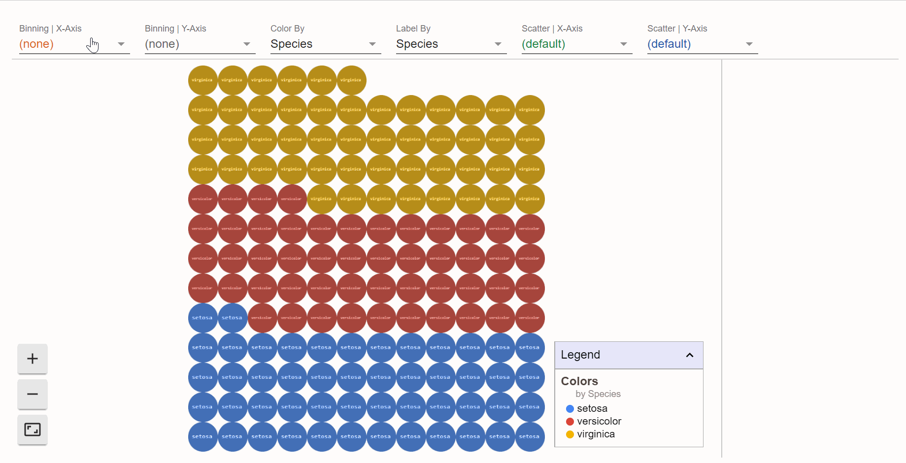

The goal of facetsr is to create an R wrapper for facets.
I watched the presentation from RStudio 2020 Conf on Data, visualization, and designing AI - Fernanda Viegas & Martin Wattenberg. Facets library discussed there were quite inspiring but I couldn’t find an R wrapper for that so I have created my own. I believe it can be used for more than just AI data. You can take a look but, please, note the package is just a proof of concept.
If you find it useful, I’d appreciate your feedback.
Installation
You can install the released version of facetsr from github with:
remotes::install_github("openpharma/facetsr")
Example
This is a basic example which shows how to start using facets.

library(facetsr) # facets dive facets_dive(iris) # facets overview facets_overview(iris) facets_overview(list(list(data = iris, name = "iris"), list(data = cars, name = "cars")))
Shiny
You can use facetsr in shiny apps.
Example:
# app.R library(shiny) library(facetsr) server <- function(input, output, session) { output$facets<- render_facets({ facets(iris) }) } ui <- fluidPage( facets_output("facets") ) shinyApp(ui = ui, server = server)